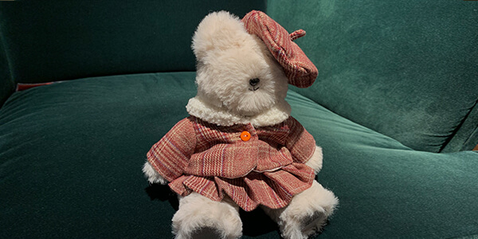
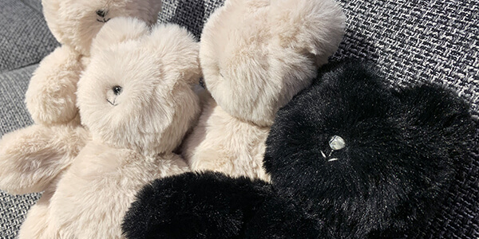
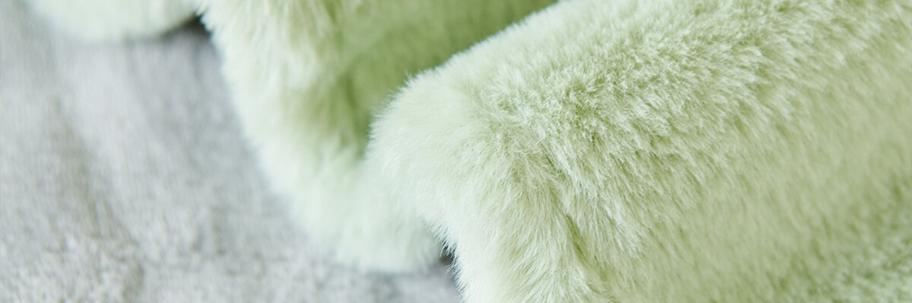

Custom Plushies
Turning your original characters (OCs) and personal ideas into physical plushies. Simple hand-embroidered faces and huggable shapes.
As comforting as a fresh loaf. As precise as micro-engineering.
Handcrafted custom plushies & functional miniature wardrobes.
Turning your original characters (OCs) and personal ideas into physical plushies. Simple hand-embroidered faces and huggable shapes.

Tiny clothes that actually work. We focus on true-to-scale tailoring, real zippers, and proper linings, all shrunk down to fit your plushies.

Meet the "Doughlings"—my original friend-shaped plushies—along with other quirky, science-inspired soft toys and pouches.
Take a look at my past work. From recreating childhood toys to tailoring tiny jackets, see how these plushies are made from scratch.

"Looffe" comes from the word loaf. I believe a stuffed toy should feel as soft and comforting as a freshly baked loaf of bread. Every piece is handmade in my studio with patience and care.